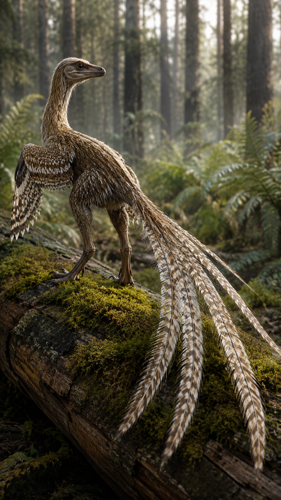
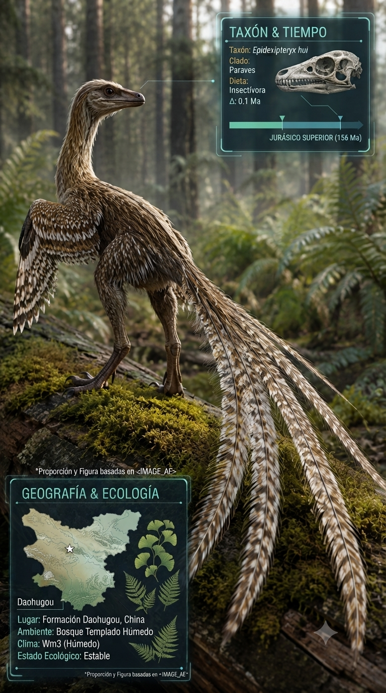
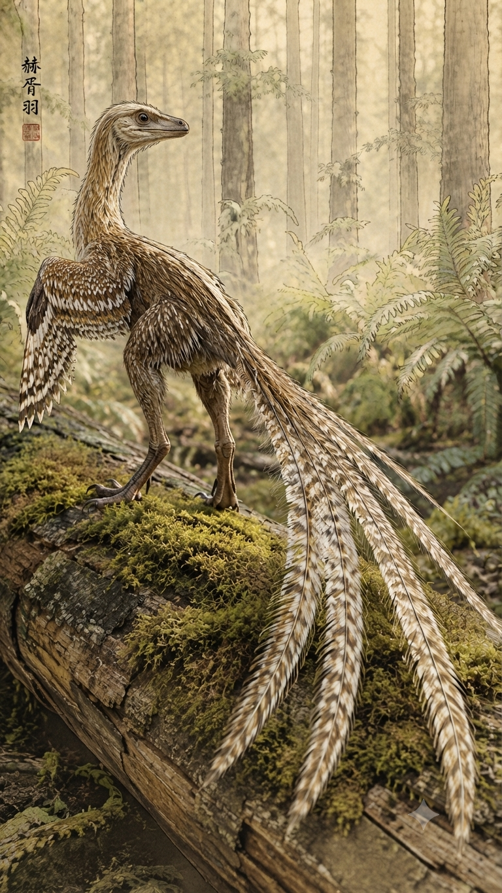
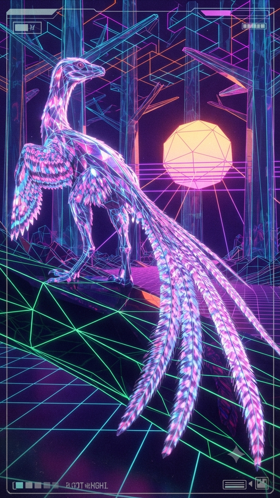

Paleoficha de PalEntropía




TAXÓN:
Epidexipteryx hui
CLADO:
Scansoriopterygidae (Paraves basal)
DIETA:
Insectívoro; cazador ágil de pequeñas presas mediante visión activa y gran destreza manual.
TAMAÑO:
Aproximadamente 25 cm de longitud corporal.
LOCOMOCIÓN:
Arborícola; adaptado para trepar y realizar pequeños planeos o saltos entre ramas.
TIEMPO:
Jurásico Medio/Superior, aproximadamente hace 160 millones de años.
GEOGRAFÍA:
Formación Daohugou, Asia oriental.
EQUIVALENCIA PALEOGEOGRÁFICA:
Bosques densos con microclima estable favorecido por la actividad volcánica.
AMBIENTE PALEAOECOLÓGICO:
Bosques de coníferas, ginkgos y cícadas con abundante estratificación vegetal.
ECOLOGÍA:
• Flora: Bosques dominados por gimnospermas; abundante materia vegetal en descomposición sobre el suelo.
• Fauna secundaria: Comunidad de la Biota de Yanliao, famosa por la extraordinaria preservación de plumas y tejidos blandos.
• Nichos: Trepador especializado. Su tercer dedo extraordinariamente largo le permitía extraer insectos y larvas de la corteza, mientras que sus cuatro largas plumas caudales probablemente se empleaban en exhibición y comunicación.
• Relaciones: Paraviano basal muy próximo al origen de las aves. Demuestra que las plumas ornamentales y la especialización arborícola evolucionaron antes del vuelo plenamente desarrollado.
CLIMA:
Wm22 (Jurásico cálido). Clima subtropical estacional con suficiente humedad para mantener bosques densos y una abundante fauna de insectos.
ESTADO ECOLÓGICO:
Estable. Epidexipteryx constituye una evidencia clave de la miniaturización y de la evolución temprana de las plumas complejas en dinosaurios terópodos cercanos al origen de las aves.